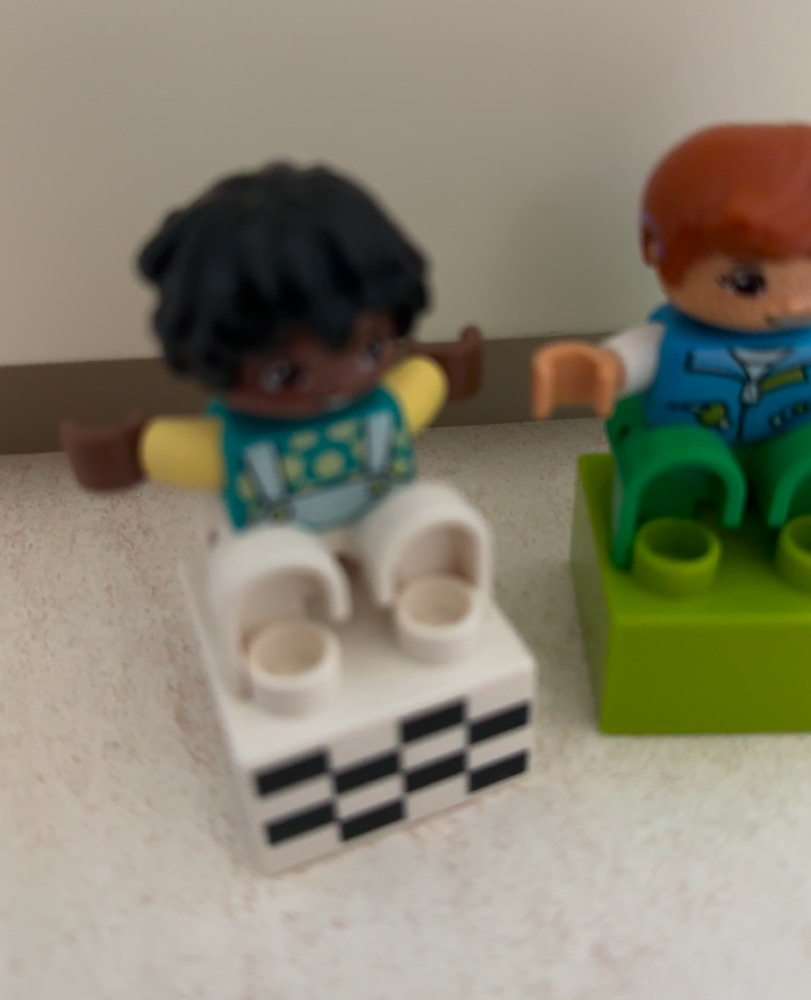
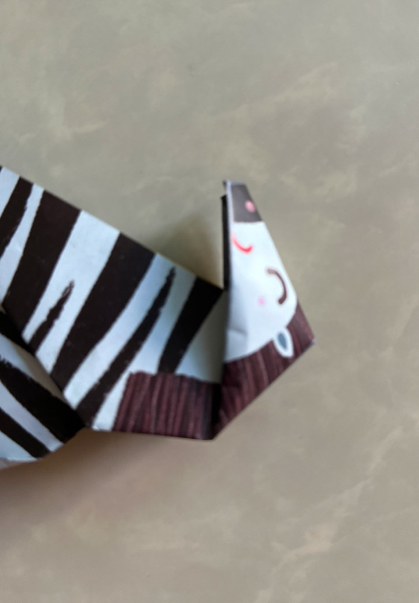
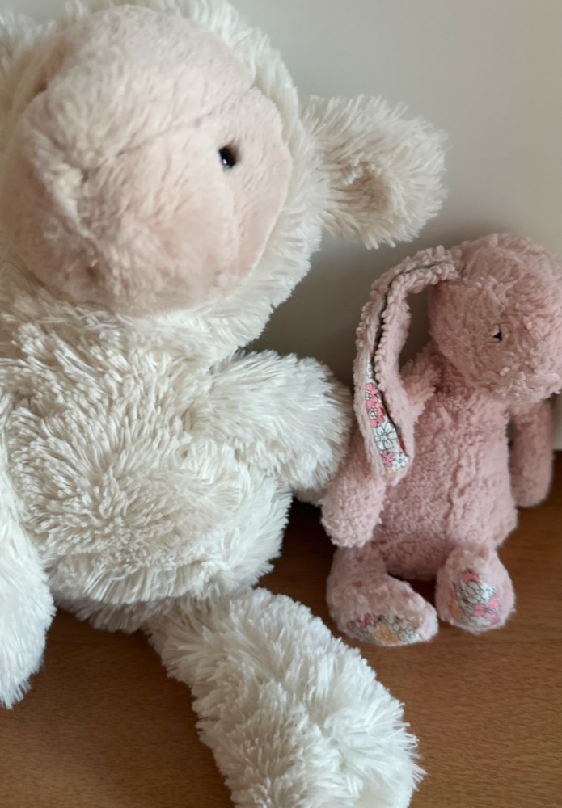

Honest Camera 是为小小手设计的真相机。孩子按下黄色按钮 — 喀嚓！— 照片就安全地存进家里的照片图库。没有其他按钮。没有东西可以切换、可以买、可以迷路。

画面上只有一颗按钮。喀嚓一声、闪一下光、手上轻轻一震 — 孩子马上知道拍到了。
没有保存按钮，也没有跳出来问东问西的窗口。按下的那一刻，照片就以原始画质进到家人的照片图库。
拍好的照片会放大显示。按红色 × 就回到相机。接着就能继续拍下一张。
把手机交给孩子时，难免担心他按到其他功能。Honest Camera 拿掉模式和设置按钮，只留黄色快门，让孩子专心拍照。


照片不会被关在 App 里。按下快门的那一刻，就以原始画质存进家人的照片图库。
没有订阅、没有代币、没有「高级版」。App 里没有东西可以买，也没有广告可以误按。
新手引导会一步步教你用 Apple 的「引导使用模式」(侧边按钮按三下)，孩子就离不开相机画面。
幼儿分不清音量键和电源键，一按屏幕就黑了。所以快门只在屏幕上。
没有滤镜、没有 AI 修图、没有贴纸。孩子眼里的世界原原本本变成照片。所以才叫 Honest。
简体中文 · 繁体中文 · English · 한국어 · 日本语。把娃娃排排站拍照时，横着拿也可以。
为3岁以上孩子设计的简单相机。按下大大的黄色快门，照片就会存进图库。没有广告、App 内购买或设置菜单。